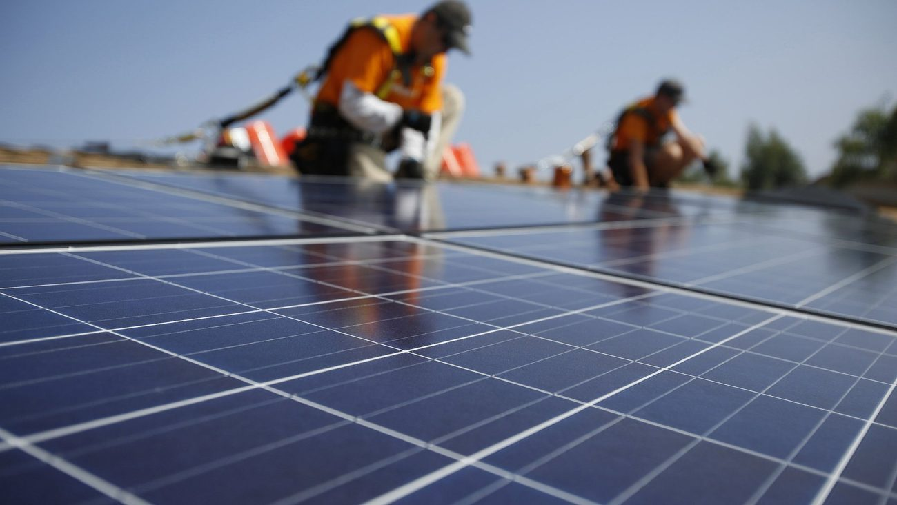
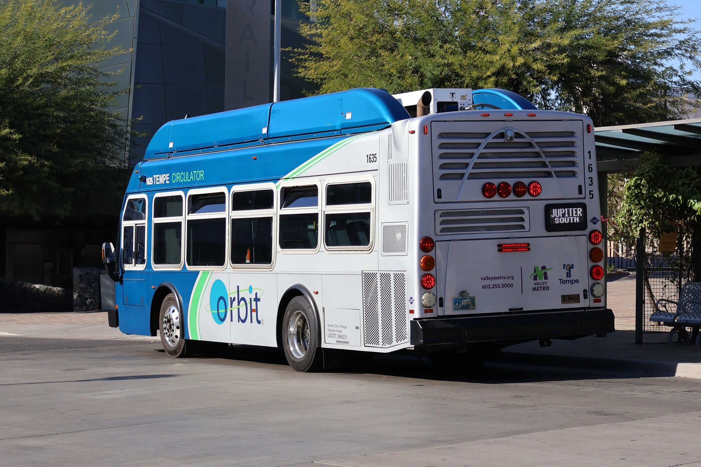

Institutional approach to sustainability
How groups, organizations and institutions scale up collective action.
Six institutional building blocks
Which can do more to shrink a large university's footprint?
Today's big ideas
Why do groups matter?
Organizations pool money, skills and trust, so one decision reaches thousands of people.
How does an organization change?
Insiders push from within, and outsiders add pressure. The best change uses both.
How do rules keep up?
Institutions that learn from new data handle a changing world better.
Enter today's code
Your instructor shows a code on screen at the start of class. Checking in counts toward your participation grade.
A city offers a tax rebate to people who install solar panels. Which government tool is that?
Why individual choices hit a structural ceiling

Quick question: what decides if you can commute without a car?
Tap to check.
Not only willpower. Transit boards, zoning rules and campus shuttle systems decide which choices are realistic and affordable. These are institutions.
Social capital lets groups act together
Bonding capital
Tight trust among similar people, like your dorm floor or a club. It builds loyalty.
Bridging capital
Links between different majors, neighborhoods or sectors. It is essential for complex problems.
Rules beat collapse
Without shared rules, people drain open resources like aquifers and fisheries.
Communities can manage
Her research showed local groups avoid collapse with clear boundaries, monitoring and fair penalties.
Quick question: why does bridging matter on campus?
Tap to check.
A nursing student flags heat risk, an engineer designs a shaded bus stop, and a business student models the cost. Each sees only part of the answer.
Organizations are multipliers
Pool resources
They combine money, skills and buying power, like a university signing one large solar contract.
Keep memory
Students graduate and staff move on, but policies, budgets and procedures stay.
Lower the cost of choosing
One buying standard covers thousands of people, so nobody researches suppliers alone.
Amplify voice
Coalitions of hospitals, schools or trade groups carry more weight than lone consumers.
Buying power example: U.S. universities, school districts, hospitals and city governments together spend more than $1.5 trillion a year, according to the instructor's slides.
Four sectors, one transition
From compliance to the triple bottom line
Greenwashing or real change?
| Red flags | Signs of the real thing |
|---|---|
| Vague buzzwords. Labels like "all-natural" with no numbers. | Third-party checks. Independent audits such as B Corp, LEED, Energy Star or Fair Trade. |
| Hidden trade-offs. One recyclable cap, toxic waste ignored. | Full life-cycle data. Total water, carbon, labor and waste, shared openly. |
| Distant pledges. "Net zero by 2050" while lobbying against rules today. | Near-term targets. Verified 2030 milestones backed by budgets. |
Quick question: what is a certified B Corporation?
Tap to check.
A company that changes its legal charter to balance profit with purpose, and is scored on workers, community, customers and the environment.
Audit an organization in your field
An organization tied to your major or career, such as a hospital, an engineering firm, a tech company, a school district, a sports venue or a campus department.
1. Find one rule, budget habit or custom that locks in an unsustainable result.
2. Propose one change to its rules, buying or measures that would shift behavior on its own.
You do not need to be the CEO
Build a green team
A team across facilities, finance, HR and frontline staff earns trust and shares the work.
Speak their language
Frame it as cost savings, risk reduction, keeping talent or patient and student health.
Start with a pilot
Try six months in one building. Gather real savings data before asking for more.
Make it the default
Double-sided printing, plant-forward catering and green buying checklists work without asking.
ASU as an institutional laboratory
Responsibility to the community
ASU's charter commits it to take fundamental responsibility for the economic, social, cultural and overall health of the communities it serves.
Energy, waste and buildings
Large solar arrays, campus zero waste sorting, green building standards and sustainable food buying.
Student-led change
Student government, campus sustainability groups and student-voted fees have helped fund solar, bike co-ops, hydration stations and gardens.
Carbon neutral buildings
ASU reports carbon neutrality for Scope 1 and 2 building emissions in 2019, ahead of its original 2025 goal.
Facts from the instructor's slides. Check the numbers against ASU sources.
When reform is resisted, stakeholders push
Investors and divestment
Pension funds and endowments file resolutions demanding climate disclosure, or sell fossil fuel holdings.
Boycotts and buycotts
Boycotts withhold spending from harmful brands. Buycotts reward verified sustainable ones.
Watchdogs and scorecards
Independent groups publish public rankings that expose deforestation or labor abuse.
Coalitions and lawsuits
Neighborhoods organize hearings, media campaigns and justice lawsuits to block polluting facilities.
Inside or outside: a Phoenix employer
A large Phoenix health care or retail employer has heavy delivery emissions and unshaded parking lots. Outdoor workers and customers face 115°F heat. This is a made-up case.
Insider coalition. You work there. Pitch a profitable, risk-reducing plan to the CFO, such as cool roofs, solar canopies or electric delivery.
Outsider stakeholders. You are residents, customers and health advocates. Design a campaign to compel action.
Adaptive governance and leadership
Colorado River water
Seasonal water amounts adjust to snowpack and reservoir levels, not to old assumptions.
Sustainable transition
A long-term shift in society, technology and industry, such as buses, rail and bike lanes replacing car trips.
Sustainability leadership
Guiding and organizing people and businesses toward responsible, fair choices.
What can I do?
Shape groups you already join
Bring sustainability into engineering societies, business clubs, pre-health groups, teams and hall councils.
Ask in interviews
Ask employers about sustainability measures, heat safety and community commitments.
Align money and voice
Choose banks that avoid fossil expansion, back local businesses and speak at public comment sessions.
Link to public policy
Organizations do best when government sets fair ground rules, which is the next topic.
A company calls a product "eco-friendly" with no numbers or certification. Which red flag is this?
Organizations turn scattered intentions into lasting change.
- Institutions are the laws, organizations and customs that shape how we use resources.
- Social capital and collective action overcome the tragedy of the commons.
- Change needs insiders and outsiders, guided by adaptive governance.
For your final project, name the institutions, rules, incentives and stakeholders your solution needs. Review Exercise 3 is due today.